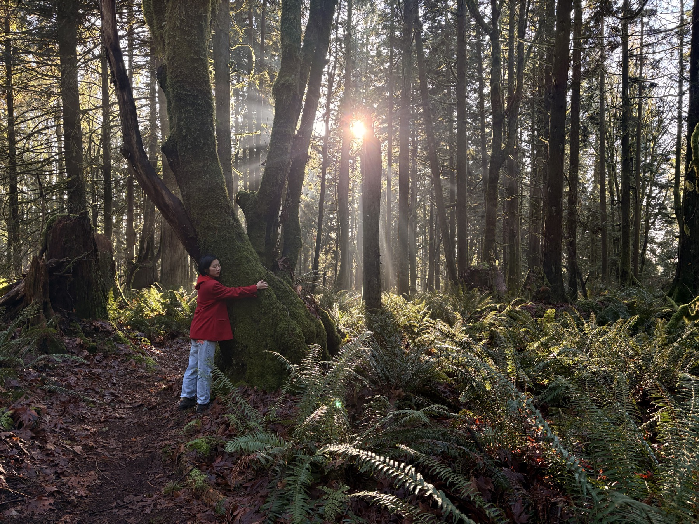

About
Why tending to a slow practice: the art of touching grass.
Forest bathing is one of the practices that bring humans into communion with nature, through the senses.
How a session unfolds
Guided forest bathing in Metro Vancouver, for groups and for one. Every session is 1.5 to 2 hours, outdoors in any weather, at a walking pace almost anyone can manage.1
- Arrive. We meet at the trailhead, phones silent and put away. Your guide sets the pace: slower than you think.
- Notice. A series of invitations to use your senses: the texture of bark, the sound under the sound. You choose how deeply to take each one.
- Return. We close in a circle with a simple tea ceremony. Most people speak for the first time here.
One walk is a visit. A practice is a relationship. The forest changes with every season, and so do we. We offer sessions through the year so you can come back to the same trees in rain, in green, in bare branch. Return is where the practice deepens.
Where we practice
- Stanley Park
- Pacific Spirit Regional Park
- Maple Ridge
- Bowen Island
We practice on the unceded territories of the xʷməθkʷəy̓əm (Musqueam), Sḵwx̱wú7mesh (Squamish), and səl̓ilwətaʔɬ (Tsleil-Waututh) Nations, and on the lands of the Katzie and Kwantlen First Nations.
These are living places with names, laws, and people who have cared for them since long before a session was scheduled. We come as guests. We walk slowly, we leave what we find, and a percentage of what we earn goes back into restoring the ecosystem we walk through.
Not parallel problems. One root.
We tend to treat climate change and our mental health as separate problems. We think they share a root: we have drifted out of communion with the living world. Enchanted Place exists to close that distance, one slow walk at a time.
Climate change and the mental health crisis are usually presented as parallel problems. We see them as two expressions of the same loss: our disconnection from the living world.
Most of us now spend about 90% of our time indoors.2 We know the forest as a view from a window, or a backdrop for a run or a hike. When we lose that communion, two things follow. We feel more anxious and less rested, and it becomes easier to harm what we no longer feel part of.
Philosopher Glenn Albrecht gave this feeling a name: solastalgia, the distress of watching your home environment change around you. Many of us carry it without words for it.
We protect what we love. We love what we know. We come to know it by spending time with it.
Forest bathing, or shinrin-yoku, began in Japan in the 1980s as a public health practice. Research on attention restoration and nature connectedness is growing, and we are careful not to overstate it. What we can say is simple: people leave our sessions calmer, and many tell us they look at the trees on their street differently.
What guides us
Vision
Re-generating harmony and compassion in human–planet co-existence.
Mission
Increase open access to the ecological unconscious.
Values
- Invite, don’t instruct. Every part of a session is an invitation. You choose how far to go.
- Tending over consuming. We come to the forest to care for a relationship, not to extract a feeling.
- Communion, not only connection. Connection is a link between two things. Communion is being part of something larger.
- Reciprocity. A percentage of our gross revenue goes back into restoring the ecosystem.
The name
Enchantment is not magic. It is the feeling of being fully present in a living world that is paying attention too. We — as humans — don’t lose it. We simply stopped practicing by over-intellectualizing.
Our guides
Certified forest therapy guides, mental health practitioners, community stewards, homo sapiens.
Our care for evidence
We continuously seek out partnerships with universities and academia to provide evidence for what we do.
Voices
All of it landed with me. I felt open and trusting of my guide, to experience the forest with her eyes.
Other voices are gathered only with written consent, and added when the words are theirs.3
A practice of your own
1:1 · sliding scale
A private session with a guide, shaped around what you are carrying. Some people come once in a hard season. Others come monthly and build a routine.
Sliding scale: $120–250 per session. Choose the amount that fits your means. You do not need to explain.
- Just youprivate
- $120–250CAD per session, sliding
- 1.5–2 hoursduration
Common questions
What if it rains?
We walk. Rain is part of the practice here. We cancel only for storms or safety warnings, with a full refund or a new date.4
Do I need to be fit?
No. We walk less than 2 km, slowly, with pauses. Tell us about any access needs and we will choose the trail with you.
What should I bring?
Layers, rain gear, and shoes you do not mind getting muddy. We bring tea, cups, and seating mats.
Can I bring my phone?
Yes. We ask that it stays silent and put away, unless you need it for safety.
Cancellations?
Full refund up to a week before; after that, we will move you to another date.5
In community. Join in care.
The practice does not end at the trailhead. Here is what we have learned, and ways to keep going together.
What is forest bathing?
A five-minute version: it is time among trees, guided by the senses rather than by a destination. People leave calmer, and many look at the trees on their street differently afterwards.
Your first session
Bring layers, rain gear, and shoes you do not mind getting muddy. We bring tea, cups, and seating mats. Phones can come, and we ask that they stay silent and put away, unless you need one for safety.
A three-minute practice
Step outside, find one tree, and stay with it for three breaths. A street tree, a balcony pot, or the view from a window is enough.
Practice through the year
- The seasonal calendar. Four sessions a year, one per season, same trail.
- The monthly letter. One invitation for the month, plus upcoming sessions.
- Short audio practices are planned for a later season.6
Belong
- Community sessions at $20 CAD per person, for non-profits and neighbourhood groups.
- Volunteer as a trail host, or become a guide.
- Host a session for your guests, staff, or residents.
The forest needs more people who listen.
Guide with us, and help more people find their way back to the living world.
You are trained in forest therapy, somatic practice, sound, or another nature-based modality. You want steady, meaningful work with groups who are ready for it. We bring the bookings, the insurance guidance, and a community of practitioners. You bring your practice.
What you get
- Paid group sessions matched to your modality, language, and area
- Shared booking, payments, and participant communications
- Peer circles with other Metro Vancouver guides
- Clear contractor terms, in writing
What we look for
Training in a recognized modality, first aid, and a way of holding energetic space that invites rather than instructs.
Bring the forest to your people.
We design and guide sessions for your community, from the first call to the closing circle. For hotels and retreats, workplaces, cities and parks departments, schools, and community organizations.
- A seasonal series for a seniors’ program
- A guest experience for a hotel
- A team day for a sustainability department
- A climate circle with a community partner
Notes
- Sessions are 1.5 to 2 hours. A team walk is less than 2 km, over about 2.5 hours.
- The “about 90% indoors” figure is the working number in this draft.
- Participant quotes are published only with written consent. Jeannie’s words are the one on the page so far.
- We cancel only for storms or safety warnings, with a full refund or a new date.
- Full refund up to a week before; after that, we move you to another date.
- Short audio practices are planned for a later season. New readings appear first in the monthly letter.